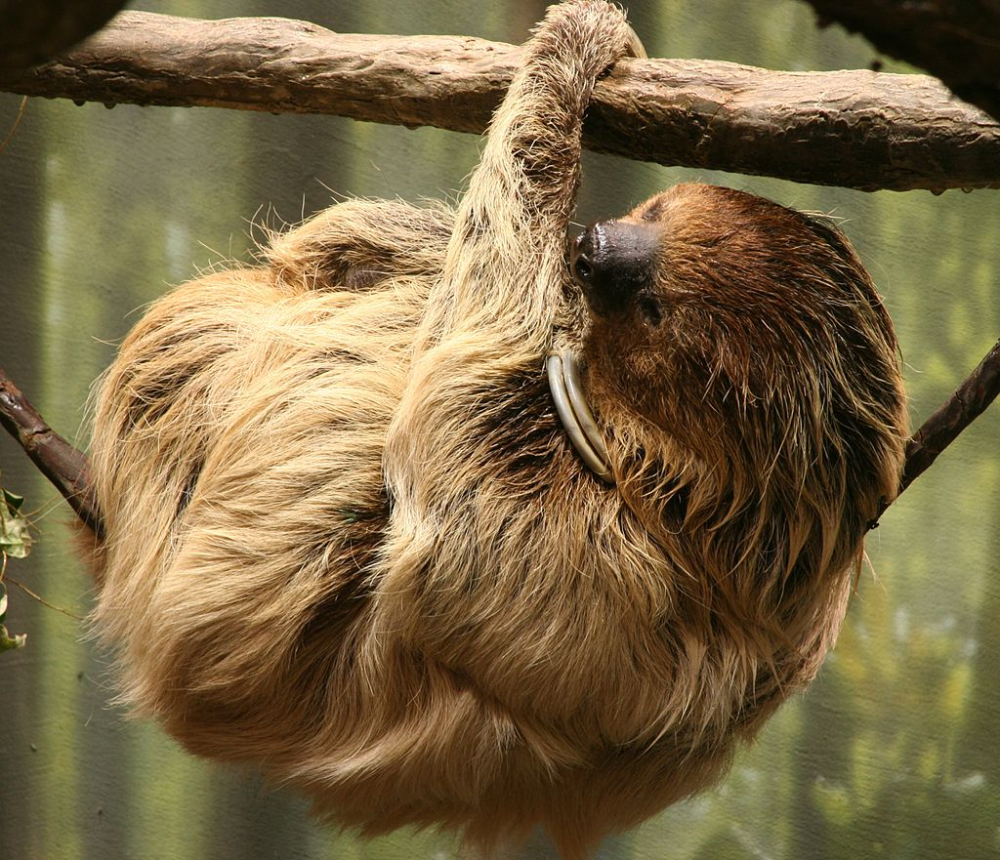
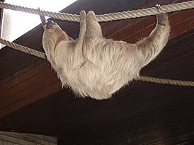

Лени́вцы(лат. Folivora, буквально: листоеды) — подотряд млекопитающих из отряда неполнозубых (Pilosa). Представители отряда характеризуются энергосберегающим способом передвижения и медлительностью, ведут одиночный образ жизни и редко сталкиваются друг с другом, но при встрече дружелюбны, им свойственно чувство привязанности.

Ленивец величиной со среднюю собаку. У него длинная жесткая шерсть, имеющая зеленоватый окрас. Такой оттенок шубе зверя придают сине-зелёные водоросли, которые поселяются в его влажной шерсти. На лапах три сросшихся между собой пальца с длинными закруглёнными когтями, которыми он цепляется за ветки деревьев. Голова маленькая, покрытая шерстью. Морда короткая, почти плоская. Очень маленький, едва заметный хвост.
В основном ленивцы питаются древесными листьями, хотя могут при случае съесть насекомое или мелкую ящерицу. Листья трудно перевариваются и обладают очень низкой калорийностью и питательной ценностью. Для переваривания растительной клетчатки ленивцы используют бактерий-симбионтов, входящих в состав микрофлоры их пищеварительного тракта. Съеденные листья перевариваются в желудке млекопитающего около 90 часов. У сытого ленивца ⅔ массы тела может приходиться на еду в желудке. Все трёхпалые ленивцы в естественной среде обитания питаются в основном листьями и цветами цекропии, потому содержать их в неволе довольно трудно.
Большую часть жизни ленивцы проводят на деревьях, почти не двигаясь. Раз в неделю они спускаются на землю, чтобы подвигаться. Спят около 20 часов в сутки. Передвигаются со скоростью 3 м/мин в кронах деревьев и 1,5 м/мин — на земле. У ленивцев рождается один детеныш, который первые 4 месяца проводит на брюхе матери. В 6 месяцев малыш, держась за мать, начинает питаться листвой. К 2,5 годам он становится полностью самостоятельным. Половое созревание происходит в 3 года. Длительность жизни в природе составляет 10-20 лет, в неволе некоторые животные доживают до 40 лет.
Зубы у ленивцев не имеют корней и поверхностного слоя эмали, поэтому их относят к отряду неполнозубые. Череп имеет два отдела, в одном из которых находится небольшой, почти без извилин, мозг. Желудок разделён на несколько отделений и напоминает желудок жвачного животного. Селезёнка расположена не слева, как у других млекопитающих, а справа. Животное имеет довольно длинную и извилистую трахею, которая обеспечивает необычайную подвижность шеи. Печень отделена желудком от брюшной стенки.
Подотряд Folivora